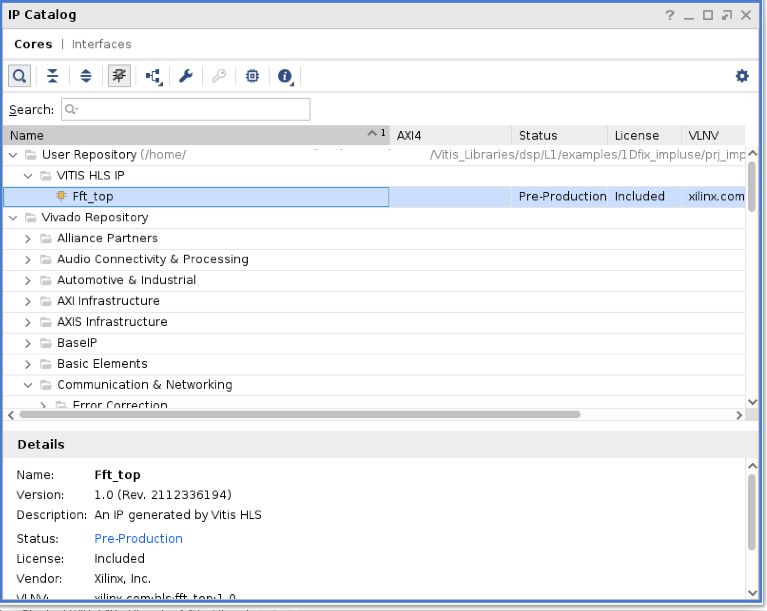

Vitis™ Application Acceleration Tutorials |
Getting Started With Vitis Libraries¶
Version: Vitis 2022.1
This tutorial focuses on how to leverage the Vitis Libraries to build your own design. The tutorial will use FFT’s L1 library as an example. It contains instructions from cloning the library, compile and simulate on its own till instantiate it into top-level design.
Before You Begin¶
Setup Environment¶
Before playing with the libraries, you need to set up Vitis environment first. For how to set up Vitis environment, please refer to Vitis online documentation. Below are the example scripts to set up Vitis and XRT:
$ source <Vitis Tool Installation Path>/Vitis/2022.1/settings64.sh
$ source /opt/xilinx/xrt/setup.sh
$ export PLATFORM_REPO_PATHS=<Platform Installation Path>
Get Vitis Libraries¶
Now we need to clone the Vitis Libraries into local path.
The Vitis Library is open source on Xilinx GitHub: https://github.com/Xilinx/Vitis_Libraries.
Assuming you are using $/home/project$ as working directory, then use following command to clone the Vitis Library repository into the working directory:
cd /home/project
git clone https://github.com/Xilinx/Vitis_Libraries.git
This will take a few seconds to minutes for downloading depending on network. After it is completed, you may browse into the sub folders to get familiar with the file structure.
Vitis_Libraries/
├── Jenkinsfile
├── LICENSE.txt
├── README.md
├── blas/
├── codec/
├── data_analytics/
├── data_compression/
├── database/
├── dsp/
├── genomics/
├── graph/
├── hpc/
├── quantitative_finance/
├── security/
├── solver/
├── sparse/
├── utils/
└── vision/
There are many different categories of libraries under the top level folder. In this lab, we are going to use the dsp library. So let’s enter the the sub-directory dsp, and you can find following directory structure.
dsp/
├── Jenkinsfile
├── L1/
│ ├── README.md
│ ├── examples/
│ ├── include/
│ ├── meta/
│ ├── src/
│ └── tests/
├── L2/
│ ├── README.md
│ ├── benchmarks/
│ ├── examples/
│ ├── include/
│ ├── meta/
│ └── tests/
├── LICENSE.txt
├── README.md
├── docs/
│ ├── Doxyfile
│ ├── Makefile
│ ├── Makefile.sphinx
│ ├── README.md
│ └── src/
├── ext/
│ ├── README.md
│ ├── make_utility/
│ └── xcl2/
└── library.json
This library is written in C++ and it contains three levels of abstractions.
L1: Module level, it provides optimized hardware implementation of the core LZ based and data compression specific modules like lz4 compress and snappy compress.
L2: Kernel level, a demo on lz4, snappy, zlib and zstd data compression algorithms are shown via kernel which internally uses the optimized hardware modules.
L3: The software API level will wrap the details of offloading acceleration with prebuilt binary (overlay) and allow users to accelerate data compression tasks on Alveo cards without hardware development.
Running the Tutorial¶
Create and run a HLS project¶
In this step, we are going to create a HLS project by using the files provided in the 1Dfix_impluse example of L1 Vitis dsp library. The source files and script file are all located under this folder. Here we assume you have cloned the Vitis Libraries into /home/project/Vitis_Libraries directory.
Go into the
/home/project/Vitis_libraries/dsp/L1/examples/1Dfix_implusefolder and run below command to create the HLS project.
make run CSIM=1 CSYNTH=1 COSIM=1 XPART=xcvu9p-flgc2104-2-e
By executing the command it will run through project creation, C synthesis, C simulation and Co-simulation flow. You can modify the parameter to skip certain steps. Here the xcvu9p part is used as an example, you may change it to other FPGA parts. Or you can use DEVICE keyword to specify an acceleration platform such as u250 Alveo platform. At the end of the flow, console window will print out the input and output data value and show PASS at the end of simulation.
...
===============================================================
--Input Impulse:
(1,0)
(0,0)
(0,0)
(0,0)
(0,0)
(0,0)
(0,0)
(0,0)
(0,0)
(0,0)
(0,0)
(0,0)
(0,0)
(0,0)
(0,0)
(0,0)
===============================================================
===============================================================
--Output Step fuction:
(1,0)
(1,0)
(1,0)
(1,0)
(1,0)
(1,0)
(1,0)
(1,0)
(1,0)
(1,0)
(1,0)
(1,0)
(1,0)
(1,0)
(1,0)
(1,0)
===============================================================
INFO: [COSIM 212-1000] *** C/RTL co-simulation finished: PASS ***
...
The testbench uses a single pulse signal as input to the FFT and the output should be a step signal. And these can be verified by looking at the values printed out to the screen.
Now we will open the project in Vitis HLS GUI. Enter following command in
/home/project/Vitis_libraries/dsp/L1/examples/1Dfix_implusedirectory:
vitis_hls -p prj_impulse_test.prj &
You may browse into the source files, synthesis report or waveform viewer by simply selecting them from the ‘Explorer’ window and ‘Flow Navigator’ window.
The top_module.cpp calls the FFT library and the parameters are defined in the data_path.hpp file. For detailed instructions about how to use FFT library, please refer to the Vitis Library github.io page.
Export IP in HLS project
Now we have verified that the library IP is working properly and we will export it to a Vivado IP. To do so, click the Export RTL from IMPLEMENTATION item in Flow Navigator. In the pop-up window, we will leave every settings unchanged and click OK to export the IP.
By default, the IP will be exported to the <project folder>/solutionN/impl, in this case, it is in following directory:
/home/project/Vitis_Libraries/dsp/L1/examples/1Dfix_impluse/prj_impulse_test.prj/solution1/impl
However you may customize the path in the export pop-up menu.
In the next step, we will launch Vivado and create a top-level design to instantiate the exported IP. You may close the Vitis HLS GUI now.
View Co-Simulation Waveform (optional)
You could modify the co-simulation related command lines in file ./run_hls.tcl (around line 48) as below to turn-on the xsim waveform dump switch:
...
if {$COSIM == 1} {
cosim_design -wave_debug
}
...
Then re-run the command:
make run COSIM=1 XPART=xcvu9p-flgc2104-2-e
In this way you could get the simulation waveform, such as following example for a single SSR stream port:

We will use the interface signals behavior in co-simulation waveform as a reference for the following Vivado simulation testbench.
Use the Exported IP in RTL Design with Vivado Flow¶
Assuming you are in the root directory for this tutorial.
Create top level project in Vivado using provided RTL source files
Use following command to create a directory and start Vivado GUI:
mkdir vivado
cd ./vivado
vivado &
Create a new project with default project name project_1 and select the type as RTL Project with Do not specify sources at this time box checked. Select xcvu9p-flgc2104-2-e as the part of this project. You may select other parts as well.
Now the project has been created. Let’s add the source files into the project. Select Add or create design sources menu from PROJECT MANAGER > Add Sources and then click Add Files to add the fft_wrap.v which is located under src folder. Then select Add or create simulation sources menu and click Add Files to add the fft_tb.v into the project. Use the same procedure to add the datain.txt and dataref.txt files into the project as simulation sources as well.
The fft_wrap.v simply instantiates the FFT IP which we just exported earlier. We need to set up the IP repo path in order to let Vivado find it. To do so, click settings from Flow Navigator panel and add the IP export folder to the repo path.

Then click IP Catalog from Flow Navigator and you should see the FFT IP shown in the User Repository.

Double click on the IP and click OK to add it into the project. Now you should see the IP core was correctly instantiated in the project hierarchy view.
Open the fft_wrap.v file to take a look at its port signals. Along with the clock, reset and control signals (start, done, idle, ready), there are four input steam ports (inData_x and inData_x_ce) and four output stream ports (outData_x and outData_xwe*). The input and output data bus are simply validated by _ce or _we signals. In the testbench file fft_tb.v, we read the input data from datain.txt file, divide them into four data streams and then send them to the fft module. Four output data streams are received and compared with the reference data file dataref.txt. The test datasets are identical with the simulation example in /home/project/Vitis_Libraries/dsp/L1/examples/1Dfix_impluse directory.
module fft_wrap (
output inData_0_ce,
output inData_1_ce,
output inData_2_ce,
output inData_3_ce,
input [31:0] inData_0,
input [31:0] inData_1,
input [31:0] inData_2,
input [31:0] inData_3,
output outData_0_we,
output outData_1_we,
output outData_2_we,
output outData_3_we,
output [41:0] outData_0,
output [41:0] outData_1,
output [41:0] outData_2,
output [41:0] outData_3,
input clk,
input rst,
input start,
output done,
output idle,
output ready
);
Simulate the top level project
Click Run Simulation from Flow Navigator and select Run Behavioral Simulation. Vivado simulator launches with waveform loaded. Please note that the input data bus width is 32-bit and output data bus width is 42-bit.
If no issues encountered, simulation will end smoothly.
Result verification SUCCEED!
Simulation finished.
Below is the screen shot of the simulation waveform.

Close the simulation window.
Implement the top level project
Click Run Implementation from Flow Navigator panel and click OK in the pop-up window. This will run through the Vivado synthesis and implementation flow which will generate both timing and resource reports for this IP.
Summary¶
In this tutorial, we explain how to leverage a L1 Vitis library element to build your own design. The FFT example is selected for explanation, and you may follow similar flow to use other library elements.
Reference¶
Documentation on Vitis Libraries: https://xilinx.github.io/Vitis_Libraries/
Copyright© 2022 Xilinx